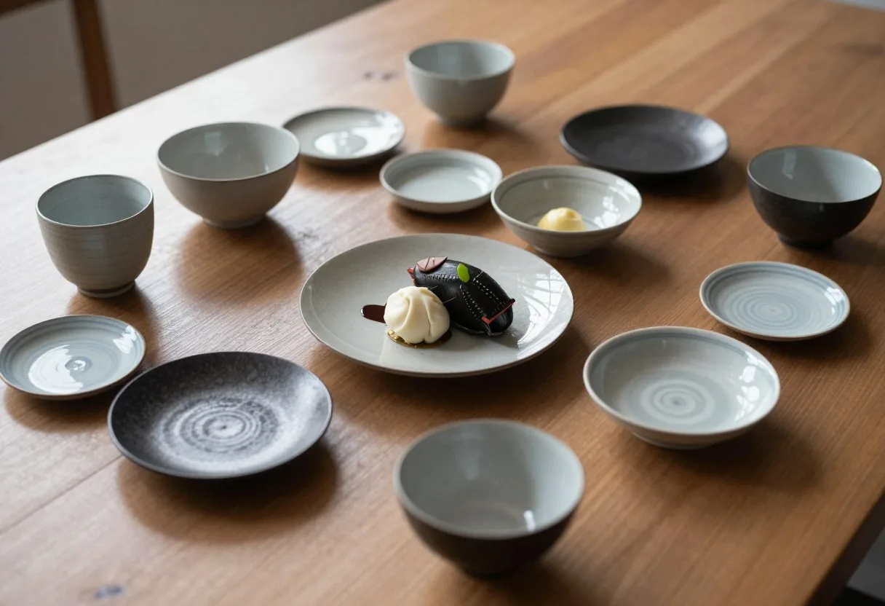
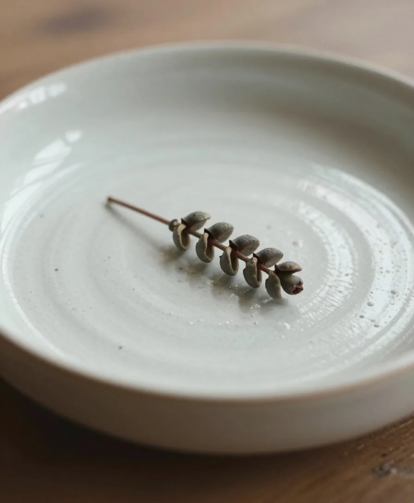
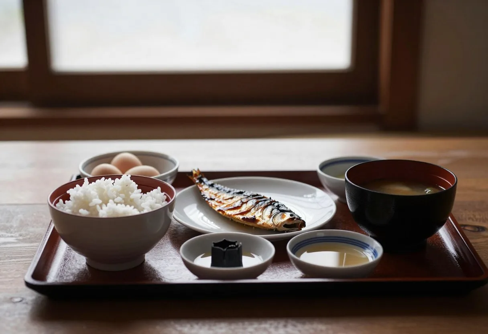

CUISINE
一皿ごとに、季節。
献立は、季節の食材が決めます。
夕餉
谷の空気がかわるたび、お皿の上も少しずつ変わっていきます。
先付から水菓子まで、素材の持ち味を邪魔しないよう、手をかけすぎず、けれど手を抜かず。
SEASON
- 先付筍
- 椀蛤
- 造り桜鱒
- 焼物山菜の天ぷら
- 煮物菜の花
- 強肴山菜の白和え
- 食事桜の炊き込みご飯
- 水菓子苺
- 先付胡麻豆腐
- 椀冬瓜
- 造り鱧
- 焼物鮎の塩焼き
- 煮物茄子
- 強肴夏野菜の冷鉢
- 食事冷やし素麺
- 水菓子水蜜桃
- 先付栗
- 椀きのこ
- 造り秋刀魚
- 焼物岩魚
- 煮物里芋
- 強肴銀杏と秋野菜
- 食事きのこご飯
- 水菓子柿
- 先付蕪
- 椀蟹
- 造り寒鰤
- 焼物岩魚の味噌焼き
- 煮物大根
- 強肴根菜の蒸し物
- 食事雑炊
- 水菓子柚子
※献立は季節ごとの例（サンプル）です。仕入れにより、内容は変わります。



器と盛り付け
器は、料理が引き立つものを。色の少ない器には、旬の彩りを一点だけ添えます。
料理が運ばれてくる、その一瞬も、お料理のうちだと考えています。

朝食
朝は、湯上がりの体にやさしい和のお膳を。炊きたてのご飯、季節の小鉢、温かな汁物。
窓の外の光が変わるのを眺めながら、ゆっくりお召し上がりください。